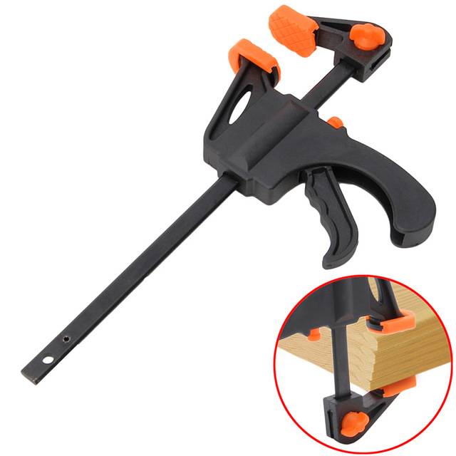

Dentro del mundo de la carpintería, con todos los campos que representa y engloba (carpintería, restauración, pintura) podemos diferenciar dos grandes tipos de herramientas, las herramientas manuales y las herramientas eléctricas
Puede resultar complicado llegar a dominarlas todas, además con el paso del tiempo muchas han quedado en desuso y relegadas a los trabajos más artesanales mientras que otras han ido evolucionando. Las herramientas manuales que utilizan los carpinteros hoy en día, han sido utilizadas desde hace muchos años y son herramientas que no requieren electricidad. Así se las ingeniaban para crear trabajos complicados a pesar de no contar con herramientas eléctricas.
Son herramientas livianas y portátiles, lo que permite agilizar muchas acciones, sobre todo aquellas que requieren ser realizadas fuera de un taller, como son el montaje e instalación de estructuras. Permiten acceder a lugares en posiciones que no serían posibles, de no ser por la
adaptación manual que tienen y lo manejables que resultan ser.
Entre las herramientas manuales más utilizadas podemos encontrar:
MARTILLO ESTÁNDAR DEL CARPINTERO - Los mejores martillos de garra de calidad son forjadas y tienen manijas de nogal. Mira la garra antes de comprar. Se debe tener bordes interiores finos que se deslizará bajo la cabeza de un clavo con facilidad, y la curva de la uña debe ser suficiente para proporcionar un buen apalancamiento. Los martillos garra vienen en una variedad de pesos.
MAZO DE GOMA - El mazo de goma es una de las herramientas más prácticas porque le permite trabajar partes de muebles sin riesgo de estropearse o deformar ellos. Es ideal para su uso en separar partes de muebles antes de renovar pegamento. Y para ajustar las articulaciones recién pegadas.
MAZO DE MADERA – Un mazo de madera no es una verdadera necesidad, pero es útil cuando se cincela la madera. Al tocar el cincel con la cabeza de madera ahorra el desgaste de la manija del cincel.
MARTILLO MAGNÉTICO – El otro martillo que pueda necesitar es el martillo magnético. Se trata de un martillo ligero de nariz delgada y con un cabezal magnético. Bueno para el trabajo de tapizado. El cabezal magnético sostiene la tachuela en posición vertical mientras se introduce, por lo que se puede controlar con una mano. Debido a la construcción estrecha de la cabeza, este martillo es bueno para entrar en lugares estrechos donde otros martillos no pueden ir. Por lo que se puede encontrar otros usos para el más allá de tapizar. La cabeza conservará su magnetismo durante un largo periodo si se mantiene una arandela metálica pegada a el cuando el martillo no está en uso.
Vas a encontrar en la mayoría de los casos grandes tornillos utilizados en los muebles. Sobre todo en los bloques de esquina y las riostras de sillas y mesas. Por lo que debe tener una buena colección de destornilladores grandes.
El secreto en el uso de un destornillador es que coincida con la anchura de la hoja de la ranura en el tornillo. Una hoja que es más pequeña que la ranura no proporcionará el empuje que necesita para girar el tornillo dentro o fuera fácilmente. Una hoja que es sólo la mitad del tamaño de la ranura puede doblarse bajo la presión que se aplica o podría dañar la ranura del tornillo. Su mejor compra es un conjunto combinado de destornilladores de acero de buena calidad. Con mangos lo suficientemente grandes como para permitir un agarre cómodo. Hay un buen número de destornilladores baratos disponibles, pero lo mejor es evitar estos “gangas”. Los buenos van a durar más tiempo y ofrecen mucho más comodidad.
No necesitará destornilladores con cabeza Phillips para muebles de madera, pero para trabajar con unidades de metal, se necesitaría varios tamaños.
Hemos incluido esta herramienta en los tipos de herramientas manuales para carpinteria. Hay esos casos raros en que utiliza los clavos en la restauración de muebles, y desea ocultar todo rastro de ellos. Esto se hace por el avellanado de la cabeza del clavo y después llenar el agujero con masilla de madera. Para avellanar un clavo, utilice un punzón de clavos para hundir el clavo por debajo de la superficie de la madera. Los punzones se utilizan con mayor frecuencia para expulsar a los pasadores metálicos utilizados en algunos muebles con el fin de reforzar las juntas de pasador.
La mayoría de aserrado en la restauración es pequeña obra y requiere un corte suave. La mejor sierra de mano para el propósito es un pequeño serrucho, una sierra de punta cuadrada, con dientes finos. El serrucho también se puede utilizar con una pequeña caja de ingletes para hacer cortes angulares.
En ocasiones, hay usos para una sierra de calar. Si es necesario cortar un nuevo símbolo de silla para reemplazar a uno que estaba roto, la cofia o sierra de calar haría el trabajo. Un símbolo, dicho sea de paso, es la pieza central de ancho en la parte posterior de una silla de madera, con frecuencia hecha con curvas agradables para el ojo. Para cortar un nuevo símbolo, trazar el diseño en un tablero de madera de espesor apropiado, luego se corta a lo largo de la línea de lápiz con la sierra de calar.
Es difícil hacer un corte continuo y suave con una sierra de calar de mano. El trabajo va más rápido y mejor con una sierra de calar eléctrica o con una sierra de sable. Sin embargo, se puede utilizar la sierra de mano si una unidad motorizada no está disponible. Se necesitará una cantidad considerable de lijado, sin embargo, al terminar el borde sin problemas después de cortar con una sierra de calar de mano.
Para el trabajo de muebles, se monta de la cuchilla en la sierra de calar con los dientes apuntando hacia el mango, por lo que el corte se realiza con cadena tirante. Esto produce cortes más suaves.

Los cinceles afilados se utilizan en un número de maneras en el trabajo de los muebles. Reducir rebajes para la instalación de bisagras y otro hardware, o hacer cola de milano o de mortaja y espiga con ellos. Debe Tener varios cinceles en su kit. Resistir cualquier tentación de utilizar los cinceles para nada más que el corte de madera, o podría arruinar la hoja de corte.
Use un mazo o un martillo lijero para conducir los cinceles cuando se corta. Siempre es mejor hacer una serie de cortes finos lugar de uno o dos cortes más profundos. Los cortes suaves son mucho más fáciles de controlar. Comience haciendo cortes verticales a través de la zona para proporcionar un borde acabado recto.
Practique el uso del cincel si nunca han cortado con uno antes. Una cosa acerca de cincelar: una vez que haya hecho un corte que es demasiado profundo, el trabajo de reparación es difícil. Es mejor hacer una serie de cortes delgados, a pesar de que lleva tiempo, que reparar un corte profundo mal hecho. Continua leyendo la lista de tipos de herramientas manuales para carpinteria.
No hay herramienta más importante para el carpintero que las abrazaderas. Que sea una regla básica desde el principio para sujetar cada trabajo de pegado, no importa cuán grande o pequeño.
Hay cuatro tipos básicos de abrazaderas en su ferretería, y necesita de todos ellos en una variedad de tamaños.
TORNILLOS DE MANO – Estos son las tradicionales mandíbulas de madera que los fabricantes de muebles han estado utilizando durante siglos. Se componen de dos bloques de madera formados con dos de acero, Unos tornillos de apriete con mango de madera pasan a través de ellos. Para apretar la abrazadera, gire los tornillos. Debido a que los tornillos de sujeción están montados en pivotes, las mandíbulas se pueden ajustar en cualquier ángulo deseado. Estos vienen en todos los tamaños, desde miniaturas de trabajo de modelado, a los grandes.
ABRAZADERAS DE BARRA – Estas son llamadas pinzas de muebles en algunos catálogos de herramientas. Se componen de dos mordazas móviles de metal, uno de los cuales tiene incorporado un tornillo de sujeción, ya sea montado sobre una barra de acero largo o un tubo largo. Se utilizan para abarcar el trabajo grande como tableros de mesa, el asiento de una silla, o el lateral de un armario. Para grandes trabajos de encolado, es posible que tenga un máximo de tres o cuatro a la vez; dos es un mínimo para la mayoría de las tiendas.
ABRAZADERAS DE CORREA Y TELARAÑA – Algunos trabajadores dicen que estos son las herramientas más prácticas entre los tipos de herramientas manuales para carpinteria. Son baratos y con frecuencia se pueden usar para hacer el trabajo sin abrazaderas de barra costosas. Literalmente, la correa es como un torniquetes aplicado a los muebles.
Las abrazaderas que compra consisten en una correa de tela equipado con una abrazadera de metal. Ponga la correa alrededor del trabajo a sujetar y apretar tirando de la correa. No muy diferente de la forma en que apriete el cinturón de seguridad del avión. La mayoría de los cuerpos de sujeción están hechos para que pueda hacer el ajuste final girando una tuerca en el lado del cuerpo con una pequeña llave.
A menudo improviso mis propias abrazaderas de correa, utilizando una cuerda para tender la ropa ordinaria y un destornillador largo. Evito de esta manera hacer mas cara mi lista de tipos de herramientas manuales para carpinteria. El resultado no es una herramienta elegante, pero funciona. Simplemente envuelva la cuerda varias veces alrededor de la pieza. Atar los cabos sueltos. A continuación, inserte el destornillador entre las hebras de la cuerda y girar para apretar, (como un torniquete). Cuando la cuerda es lo suficientemente apretada, coloque el mango del destornillador debajo de la parte más cercana de la pieza para que la cuerda este a la tensión correcta. Una palabra de advertencia: no tuerce la cuerda demasiado o se puede romper. Que sea lo suficientemente apretada para mantener las piezas pegadas entre sí. ABRAZADERAS "C" – El siguiente en la lista de tipos de herramientas manuales para carpinteria. Esta se asemeja a la letra C, con la boca abierta de la letra usada para sujetar. Las superficies de sujeción son pequeñas pastillas de metal, ajustados girando un tornillo de mango, que mueve la plataforma inferior.
ABRAZADERAS "C" – El siguiente en la lista de tipos de herramientas manuales para carpinteria. Esta se asemeja a la letra C, con la boca abierta de la letra usada para sujetar. Las superficies de sujeción son pequeñas pastillas de metal, ajustados girando un tornillo de mango, que mueve la plataforma inferior.
Debe introducir piezas de madera de desecho entre la pieza a trabajar y las pastillas de metal de abrazaderas en C antes de apretar. Ya que las pastillas harán abolladuras feos en la superficie de los muebles.
Es probable que ya es dueño de unos alicates estándar. Además, otros dos tipos son útiles de vez en cuando. Incluimos estos entre los tipos de herramientas manuales para carpinteria. Uno de ellos es los alicates de puntas largas, para trabajar en lugares estrechos. El otro es alicates de corte de extremo. Se utiliza para tirar de los clavos o cortar las cabezas de los mismos. No compre cualquiera de éstos de inmediato, ya que se utilizan con poca frecuencia. Pero hay que tener esto en cuenta, porque hay momentos raros cuando no hay otra herramienta para hacer este trabajo.
Una regla, por supuesto, es un dispositivo para medir, y se necesita una siempre para medir el trabajo. Tres tipos son útiles para hacer un buen trabajo de muebles. El metro plegable; la regla de la cinta de acero; y el try-cuadrado, conocido comúnmente como el T-cuadrado.
El metro plegable es el más conveniente para mediciones generales, tales como el interior de un cajón o armario. El T-cuadrado se mantiene contra la parte exterior de un armario, cajón u otra construcción cuadrada para mostrar si las esquinas son verdaderamente cuadradas.
Realizan la misma función que las herramientas manuales, pero se obtienen resultados de mejor calidad, simplificando el trabajo y haciéndolo más eficiente.Las herramientas eléctricas tienen en común ser relativamente livianas y portátiles, fabricadas en materiales ligeros como plástico duro o aluminio, tener motor monofásico con velocidad de rotación de sus ejes que va entre los 3.500 y los 20.000 r.p.m., acoplado directamente a las hojas de corte, carcasas de protección, guías y asas, para su manejo y gran maniobrabilidad.
De cada una de las herramientas existen distintos modelos y versatilidad de usos según los requerimientos del usuario.
Es así como con un taladro podemos además de taladrar, atornillar y desatornillar con sólo mover un interruptor.
La sierra caladora es una herramienta de carpintería eléctrica diseñada para realizar cortes e distintas direcciones, (tanto abajo y arriba) como en algunos con movimientos del tipo pendular o abajo y arriba pero con un desplazamiento hacia delante para realizar con facilidad cortes rectos o curvos sobre casi cualquier tipo de superficie. Es una herramienta ampliamente utilizada para cortar maderas materiales metálicos y plásticos.
Las ruteadoras tienen la capacidad de realizar varios trabajos sobre la madera. La variedad de usos de esta permite a los carpinteros realizar un trabajo fácil terminar. Generalmente las fresadoras son empleadas para crear juntas o colas de milano y tallar diseños complicados en la madera. Actualmente, para finalizar un trabajo de acabado y tallado en la madera con herramientas de mano las fresadoras permiten acelerar el proceso y hacer trabajos esculturales de mayor precisión.
Las fresadoras son una de las herramientas de carpintería eléctricas más ligeras y versátiles que hay, ya que cuentan con múltiples accesorios que además permiten realizar cortes circulares para hacer agujeros en el centro de la madera.
Es la evolución de los anteriores que surgió al acoplarle un motor eléctrico para facilitar el taladrado. Es una herramienta imprescindible para cualquier bricolador. Su versatilidad le permite no solo taladrar, sino otras muchas funciones (atornillar, lijar, pulir, desoxidar, limpiar, etc) acoplándole los accesorios necesarios.
Características:
- ELECTRÓNICO: La velocidad de giro se regula con el gatillo, siendo muy útil poder ajustarla al material que estemos taladrando y al diámetro de la broca para un rendimiento óptimo.
- REVERSIBLE: Puede girar a derecha e izquierda. De este modo podemos usarlo como destornillador para apretar y aflojar.
- PERCUSIÓN: Además del giro, la broca tiene un movimiento de vaivén. Es imprescindible para taladrar con comodidad material de obra (ladrillos, baldosas, etc)
- POTENCIA MEDIA Y DE CALIDAD GENERAL MEDIA-ALTA: A partir de 500 W la potencia del taladro es suficiente para cualquier uso. Sin llegar a la gama profesional, es aconsejable comprar el taladro de buena calidad y sobre todo de marca conocida.
Invertir en el taladro es totalmente recomendable, sobre todo si hacemos bastante bricolaje. Después, y si hacemos determinados trabajos, podemos empezar a pensar en comprar algún taladro más específico.
Las lijadoras orbitales se utilizan para trabajos de terminado en pisos de madera dura y otras superficies. El papel de lija se adhiere a la almohadilla rectangular en la parte inferior de la lijadora. La almohadilla se mueve con un movimiento circular irregular realizando entre 4.000 y 10.000 órbitas por minuto. El movimiento elíptico ayuda a prevenir el daño a la superficie de madera, y mientras mas alta es la velocidad, mas rápidamente se completa el proceso de lijado. Una lijadora orbital puede proveer de un terminado de calidad sin la utilización de una lijadora de terminado. Adherirle papel de lija es relativamente fácil y solo toma un minuto.
La maquinaria de carpintería nos permite realizar el trabajo de manera más eficiente y productiva, pero todas ellas deben utilizarse con precaución, el usuario debe tener en mente durante todo el tiempo que dure el trabajo a la seguridad como aspecto fundamental, es por eso que no sólo tendrá que manipular las máquinas con precaución sino que también necesitará vestir o incluir equipo de seguridad.
La maquinaria para carpintería como las herramientas requieren de un uso cuidadoso, los trabajos que se efectúan con ellas presuponen una alta siniestralidad, tanto en lo que se refiere a la gravedad de las lesiones humanas como a dicha gravedad de desperfectos técnicos; las herramientas de corte son las más peligrosas para el trabajador, las lesiones más frecuentes son: amputaciones de dedos de la mano o cortes profundos, es por esto que a continuación estableceremos algunas medidas de seguridad que deben seguirse religiosamente:
- No se deben utilizar guantes cuando se utilice cualquier tipo de maquinaria de carpintería
- Cuando se manipule material de gran tamaño se necesitarán zapatos de seguridad con protección
- Los protectores auditivos son obligatorios en máquinas con altos niveles de sonido
- Se debe evitar cualquier tipo de distracción cuando se esté operando las máquinas
- El área de trabajo debe conservarse en perfectas condiciones, es decir, limpia, libre de aserrín, pedazos de madera u otros desperdicios
- Antes de iniciar el corte de una madera debemos asegurarnos que la misma no padezca nudos, clavos o demás imperfecciones, las mismas pueden causar daño a la máquina.

La sierra circular es una máquina para aserrar longitudinal o transversalmente madera, metal, plástico u otros materiales. Está dotada de un motor eléctrico que hace girar a gran velocidad una hoja circular. Empleando una hoja adecuada (en cuanto a su dureza y a la forma de sus dientes), una sierra circular portátil puede cortar una amplia variedad de materiales.
Se caracterizan por realizar cortes precisos. Además, algunos modelos posibilitan el corte en ángulo hasta de 45 grados e incorporan una protección contra el polvo o serrín que se produce en el corte; algunas están preparadas para conectarse a un extractor externo.

Es una máquina que cuenta con dos volantes por los que discurre una hoja de sierra de cinta. Las hojas de sierra están guiadas por cojinetes laterales y traseros Las partes de la máquina donde existe la posibilidad de roce con la hoja están fabricadas con materiales blandos, como madera o, en el caso de los volantes que tienen llantas, goma o PVC.
Tiene la ventaja de poder cortar al hilo, al tronce y espesores de hasta de 300 mm. La hoja de sierra es de 30 mm de ancho, pero podemos cambiarla por hojas de hasta 10 mm para realizar cortes curvos. Debido al espesor de la hoja de sierra de aproximadamente 2 mm de espesor y el material con el que está fabricada la herramienta acero al carbono, no es aconsejable cortar materiales como aglomerados. Vienen provistas de guías para cortar al hilo, inglete, en algunos modelos incluso se puede inclinar la mesa para realizar cortes en bisel.
Máquina que se utiliza para realizar un plano perfecto en una superficie, principalmente se realiza una cara y un canto a escuadra. Después se realizan los planos paralelos a estos en la regruesadora. Ambas máquinas son similares con la diferencia de que en la primera el eje de las cuchillas se encuentra entre las dos mitades de la mesa, mientras que en la segunda se encuentra encima de la mesa, y es la distancia que separa la mesa del eje de las cuchillas la que da el grosor de la pieza. El ancho normal de estas máquinas es de 400 mm y el espesor que alcanza la regruesadora de 200 mm.
Máquina que realiza piezas de revolución. El torneado de la madera se realiza con gubias específicas de diferentes perfiles, que se utilizan manualmente apoyándolas sobre un soporte que se encuentra situado delante de la pieza en movimiento. Los pulidos se hacen apoyando lijas directamente sobre la pieza. La longitud máxima que puede trabajar un torno viene dada por la distancia entre el cabezal y el punto del carro, y el diámetro máximo lo determina la distancia entre el centro del cabezal y la bancada.
Se utiliza principalmente para realizar molduras tanto al hilo como a testa o sobre formas curvas y determinados ensambles. La herramienta con la que trabaja es la fresa, en el mercado las podemos encontrarlas de infinidad de formas y tamaños, de perfil fijo o intercambiable, que a su vez pueden combinarse para realizar un mismo trabajo. Hoy en día estas fresas están construidas en widia que les proporciona mayor duración y eficacia. Puede realizar todo tipo de molduras y ranuras rectas y curvas, dependiendo de la fresa que pongamos, en el mercado disponemos de una amplia gama.
Para más información acerca de más máquinas, herramientas o accesorios, visita la
siguiente página: